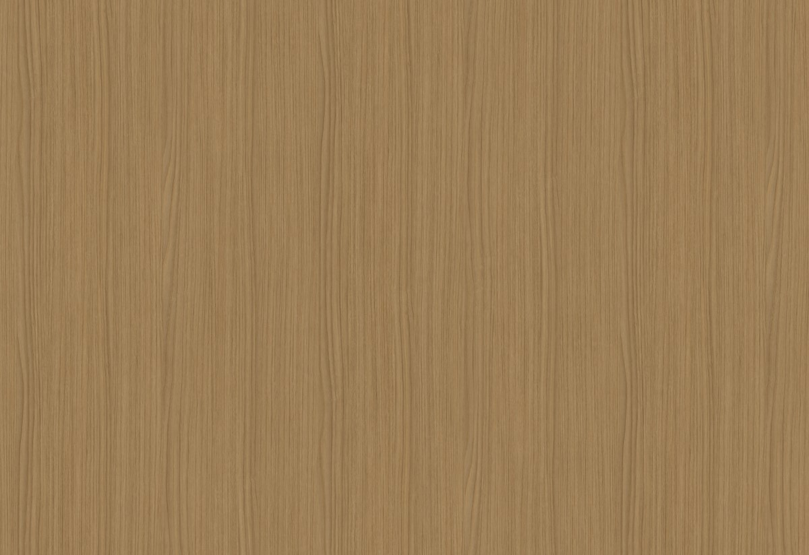
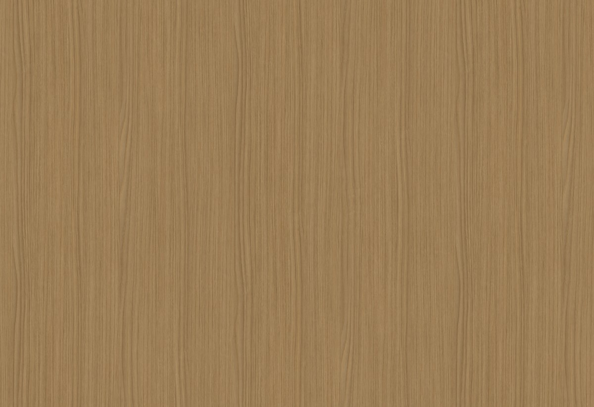

Nossa História
Tudo começou em um culto universitário na UFES. Ele, estudante de engenharia da computação, eu, cursando sistema de informação no IFES. Nosso primeiro encontro foi casual, graças a um amigo em comum. Ele ofereceu carona, perguntou se eu queria ir, e assim começamos a nos conhecer.
Descobrimos nossa afinidade por músicas, especialmente por Oficina G3, durante essa carona de volta para casa. Trocamos muitas mensagens sobre isso. Planejamos ir a um show da banda, mas ele teve que viajar a trabalho. Mas um dia antes do show, ele pediu para me ver. Nos encontramos no restaurante do Tyler, rimos, conversamos, e ali, nosso primeiro encontro se desenhou. Simples assim, nossa história começou.
Após o primeiro encontro, nós ficamos conversando sobre a igreja, nós ficamos visitando um do outro, mas como a Luiza sempre aprendeu a seguir o futuro esposo, a escolha foi ficar na igreja do Emerson.

A igreja do Emerson, pede para que os voluntários façam corte no namoro, e como ele toca guitarra na igreja, foi preciso esse acordo entre nós. Não é fácil, mas com o tempo a Luiza conseguiu entender o motivo, ao longo do tempo no nosso namoro conversamos sobre tudo, a corte ela serve exatamente para isso: nos conhecermos. Conversamos sobre cada detalhe de nós do passado, do presente e no futuro. Viramos muito mais que namorados, temos uma amizade sincera, construímos uma ligação que nos entedemos muito bem.

As conversas ficaram maduras com o passar do tempo, sonhando na casa, nos filhos, na vida profissional. Surgiu a oportunidade de fazermos o curso de noivos, foi bastante impactante para nós, nos conhecemos mais profundo ainda, e vimos que precisamos melhorar alguns pontos.
Assim que nós dois terminamos as nossas faculdades, recebemos propostas melhores de emprego, conseguimos comprar o nosso apartamento, e futuramente a Luiza pedida em noivado, e assim, podemos continuar com a nossa história.
 
